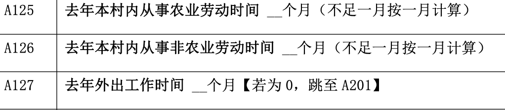
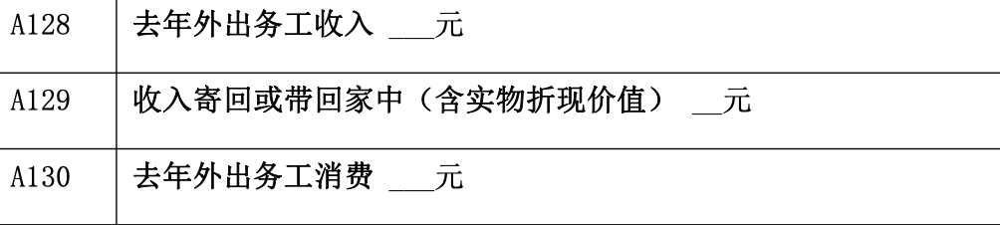

2025-09-08
1.1 选题
1.2 定性数据
1.3 定量数据
1.4 在线工具
兴趣驱动：选择自己感兴趣的主题，保持动力。
可行性：确保资源、时间和目标人群可及。
明确性：研究问题清晰，能转化为可量化的问卷题目。
社会价值：选择对学术、社会或政策有意义的主题。
明确调查的目的：
探索现象（如）
验证假设（如评优与学习时长、社团活动时长角色的关系）
解决问题（如共享）
目标人群：是否容易接触到足够样本（如本校学生）？
数据类型：是否适合定量或定性数据？
时间与资源：问卷设计、发放和分析的时间是否充足？
示例：
选调生
目的：了解已有研究，避免重复，找到切入点。
方法：
市调大赛选题。
搜索关键词，如“大学生+心理健康+问卷”。
示例：发现“大学生拖延症”研究较多，但“拖延症与社交媒体使用”的结合较少，可作为切入点。
将宽泛主题转化为具体问题：
宽泛：“大学生心理健康状况”。
具体：“大学生学业/择业/同伴压力与焦虑水平的关系”。
过于宽泛：如“大学生生活”（需聚焦具体方面）。
过于敏感：如个人隐私问题，可能降低响应率。
缺乏新意：重复已有研究，需找到独特角度。
不可量化：如“大学生幸福感”（需定义可测量的指标）。
头脑风暴：与同学、导师讨论，激发灵感。
小规模测试：先试探性询问几人，验证主题吸引力。
结合热点：如疫情后的学习方式变化、AI工具使用情况。
工具支持：使用问卷星便于数据收集。
单项选择题
多项选择题
题干清晰：避免模糊或歧义
选项互斥：不同答案之间不重叠
顺序合理：非常不满意 → 不满意 → 一般 → 满意 → 非常满意
覆盖全面：提供“其他/不愿回答”选项
避免歧义，确保每位受访者理解一致。
你平时经常点外卖吗？
A. 从不怎么点
B. 偶尔点一下
C. 经常点
D. 很经常点
E. 特别经常点
题干：在过去一周，你使用外卖服务的频率是？ 选项：
A. 从未
B. 1–3 次
C. 4–6 次
D. 7次及以上
选项互斥
不同选项之间不能重叠，否则影响统计。
错误示例：年龄：A. 18–25 B. 25–35 C. 35–45（25 和 35 重复）
改进示例：年龄：A. 18–24 B. 25–34 C. 35–44 D. 45及以上
您希望孩子读书至少读到什么程度？
1.现在就不想读书了
2.小学毕业 （6 年）
3.初中毕业 （9 年）
4.职业高中/中专/技校 （大约 12 年）
5.普通高中毕业 （12 年）
6.大学专科（15 年）
7.大学本科（16-17 年）
8.研究生（硕士大约 19 年，博士大约 23 年）
9.无所谓
D18 本自然村内或附近有没有以下金融机构？【多选】
1.商业银行（包括邮政储蓄）
2.农村信用合作社或农村资金互助社
3.村村通
4.其他非正规金融机构
5.没有【跳至 D19】
最近家庭借出给个人的款项（询问五年内印象最深刻的三笔）
G463.最近五年是否借过钱给其他人？
1.是 2.否【结束访问】
G467 对方借款的用途
1.娶媳妇 2.嫁女 3.丧事 4.看病 5.买食物
6.建房 7. 购房 8.买车 9.买其他日用品
10.孩子上大学 11.孩子上高中 12.孩子上初中
13.孩子上小学 14.农业生产 15.做小生意
16.投资办企业 17.出去打工 18.还旧债
19.借给亲戚朋友 20.借给其他人
21.通过抬会、摇会等民间金融组织把钱借出去 22.其他，请说明
定量数据: 用数字表示、能做计算的数据。由被访者填答的填空题。
提供数值区间选项的选择题，只可排序，不可计算，属于定性数据。
每周点外卖的支出：
A. 0 ～ 50
B. 51 ~ 100
C. 101 ~ 150
D. 150以上
题干明确，单位清晰
明确说明要测量的数量及单位，避免歧义。
示例：
❌ “你每天锻炼多久？”（单位不明）
✅ “你每天锻炼多少分钟？（请填写整数，单位：分钟）”
设置合理范围或提示
给出上下界或参考范围，减少异常值和错误输入。
示例：
“你上周点外卖的次数（0–20 次）：__”
提示填写格式
指导填写整数、小数或百分比，保证数据统一性。
示例：
“你每天平均睡眠时间（小时，精确到 0.5 小时）：__”
激励和易填性
短题、简洁题干，提高完成率。
对连续数字题目，可提供滑条或数字选择器（电子问卷）。
分解复杂问题
如果一个数字涉及多个维度，可拆分为多题。
示例：
学习时间
题干：你在过去一周用于自主学习的总时间是多少？
（1）周一至周五：__小时
（2）周六至周日：__小时”


多项选择题: 允许受访者在多个选项中勾选一个或多个。
原始数据通常是分类数据（名义变量），每个选项本身没有大小顺序。
统计每位受访者勾选的选项总数。
勾选的选项总数是数值型变量（定量变量），可以做加减、平均、相关等统计分析。
题目：你喜欢的运动有哪些？（可多选）
A. 足球
B. 篮球
C. 游泳
D. 跑步
题目：你过去一个月内使用过哪些外卖平台？（可多选）
A. 美团
B. 饿了么
C. 京东
D. 淘宝
E. 商家自营平台(麦当劳/KFC/必胜客等)
SurveyMonkeyhttps://www.surveymonkey.com/
SurveyMonkey Get Quick Insights with Analyze with AI
https://help.surveymonkey.com/en/surveymonkey/analyze/analyze-with-ai/
Blix 是一款专注于开放性文本分析的 AI工具，利用大语言模型对问卷中的开放性回答进行主题提取、情感分析和趋势识别，适用于市场调研、HR 调查等场景
SPSSPRO 众言科技开发在线统计分析平台
https://lizongzhang.github.io/stat25
© Li Zongzhang